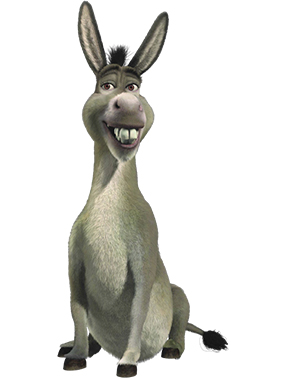
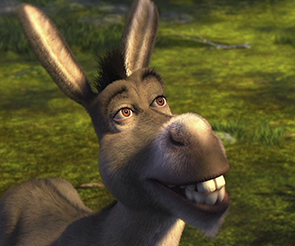

RELEVAMIENTO PERSONAJE
Personalidad
Su personalidad es alegre, muy graciosa, es de hablar mucho, tanto que cansaba a Shrek, también es de contar chistes y hacer reir a la gente, es un burro leal y compañero como ya demostró ser al guardar el secreto de Fiona y también cuando busca a Shrek.

Apariencia
Es un burro, no es de alta estatura, también es un poco rellenito. Sus facciones mas características son su dentadura, sus orejas y su pelo entre las orejas.

Contexto
Shrek era un ogro gruñon y amargado que vivía solo en un pantano, hasta que se Burro se mete en su propiedad alintentar escapar de los caballeros de Lord Farquaad ya que quería ser vendido junto a todos los personajes de cuentos de hadas. Los cuales irían al pantano de Shrek mas tarde. Shrek decide ir a buscar a Lord Farquaad junto a burro para pedirle que estos personajes se retiraran de su pantano. Este acepta pero con la condición de que le traiga a la princesa Fiona del castillo a cambio de su propiedad para así poder casarse con ella y convertirse en rey.
Shrek mas tarde al regresar y haberle entregado a Fiona al Lord, se dio cuenta que estaba enamorado de ella, irrumpe la boda y se retiran juntos, ya que ella también era un ogro bajo el hechizo que de día era mujer y de noche un ogro.
Shrek mas tarde al regresar y haberle entregado a Fiona al Lord, se dio cuenta que estaba enamorado de ella, irrumpe la boda y se retiran juntos, ya que ella también era un ogro bajo el hechizo que de día era mujer y de noche un ogro.
{kind=link}
{kind=link}
{kind=link}
{kind=link}